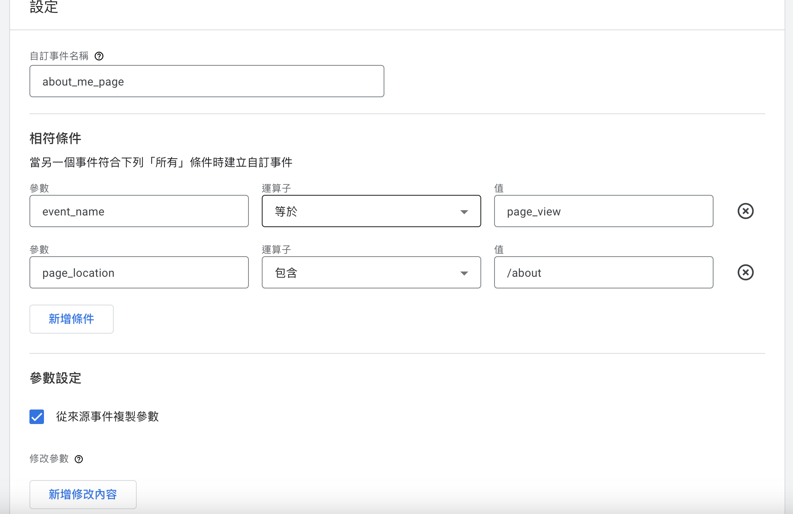
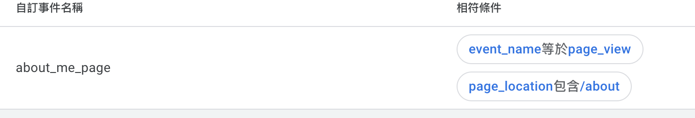
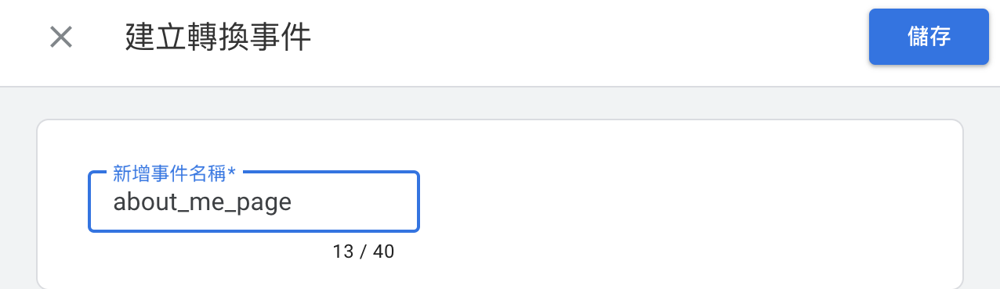
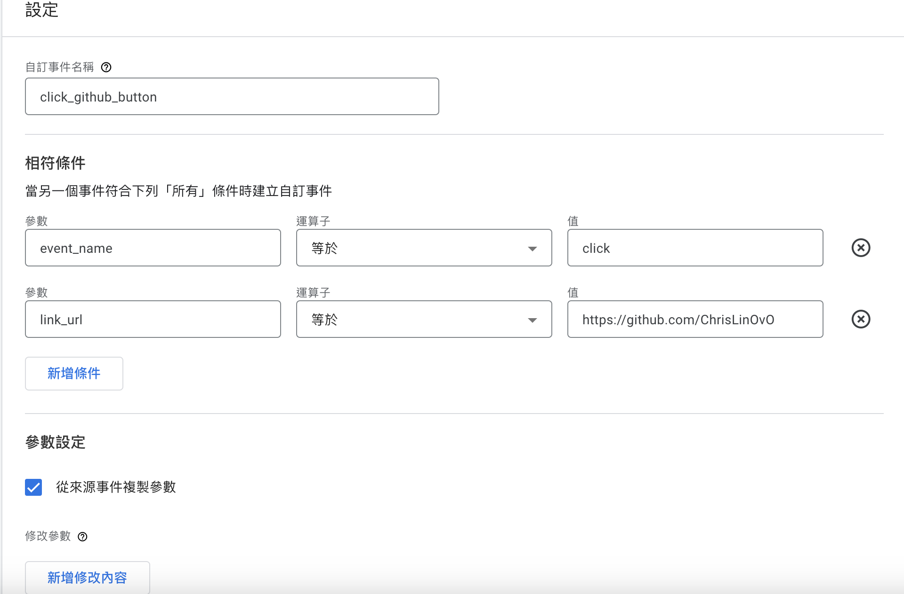
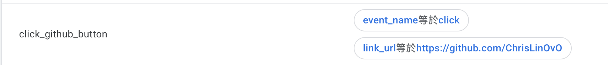
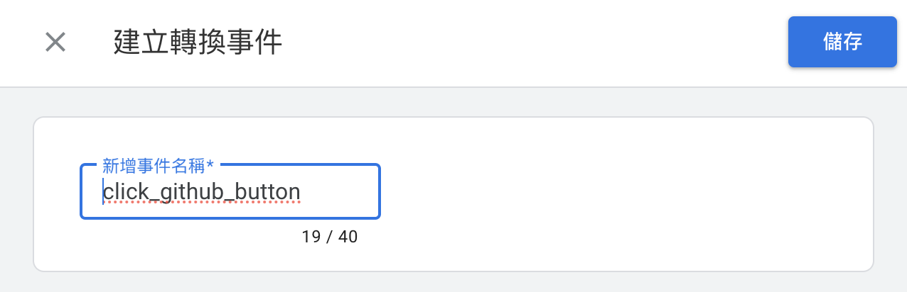
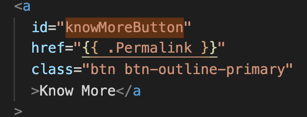
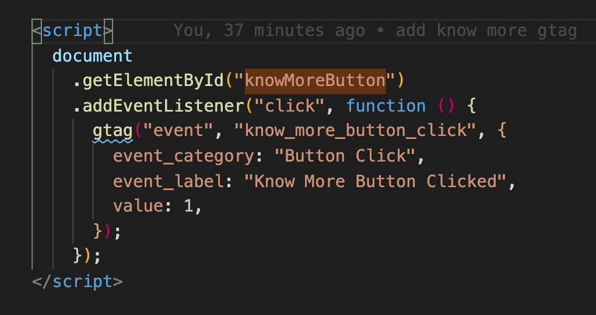
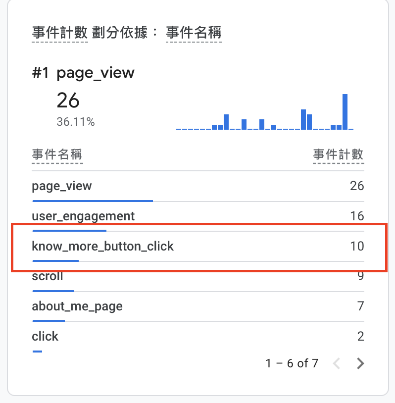

如何在 Google Analytics 4 自訂事件&轉換
前言
想要針對各特定頁面觸發事件和追蹤點擊事件，該怎麼做？
特定頁面觸發事件
步驟 1：建立事件
可到 Google Analytics 點選左下角齒輪管理/資源設定/事件創建。
這邊舉例/about頁面事件


可以去 Debug View 偵測事件
步驟 2：新增轉換
可到 Google Analytics 點選左下角齒輪管理/資源設定/轉換。
這邊舉例about_me_page事件名稱轉換

追蹤點擊事件
步驟 1：建立事件
同上，在資源事件設定。
這邊舉例點擊Social/github圖示事件


步驟 2：新增轉換
同上，在資源轉換設定。

進階實作-如何在個人網站中自訂事件發送給GA
在 Hugo 程式碼加入 gTag Event，這邊我用點擊Know More按鈕作為 Demo，只要在程式中添加以下圖是代碼就可以發事件給 GA。
當使用者點擊具有 “knowMoreButton” ID 的按鈕時，這段 JavaScript 代碼會觸發一個自定義事件，並將事件數據發送到 Google Analytics。這個事件包括事件名稱（“know_more_button_click”）、事件類別（“按鈕點擊”）、事件標籤（“點擊了更多按鈕”）和一個可選的值（1，用於量化事件的價值）。這有助於跟踪 Google Analytics 中使用者點擊 “Know More” 按鈕的互動。


這時在個人網頁觸發幾次Know More事件，可以在 Google Analytics 即時報表上看到數據了。

結語
透過自訂事件&轉換更能追蹤自己想要的數據了🎉